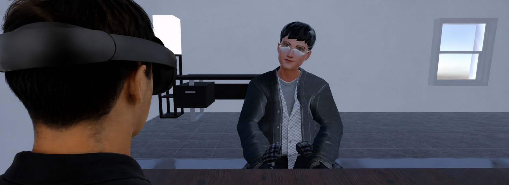

Abstract
As embodied agents take on increasingly social and relational roles in VR, visual realism and embodiment alone may be insufficient; users must also perceive these agents as emotionally attuned, supportive, and humanlike. Prior work suggests that verbal attunement and nonverbal mimicry can each improve users' social evaluations of embodied agents. However, behavioral mimicry has largely been studied outside of real-time, conversational AI interactions, leaving limited understanding of how users respond when an agent simultaneously generates contextually responsive dialogue and adapts its nonverbal behavior during an immersive conversation. To address this gap, we developed an embodied AI counselor that combines conversational AI with real-time facial-expression and posture mimicry, while producing either verbally attuned or neutral responses. We evaluated the system in a 2 × 2 within-subjects study with 20 participants, manipulating verbal attunement and behavioral mimicry. Results showed that verbal attunement was the most reliable driver of perceived empathy. Behavioral mimicry showed a marginal relationship with perceived humanness, while greater mimicry exposure showed preliminary, exploratory positive associations with empathy, positivity, and humanness, particularly among female participants. Together, these findings show that multimodal synchrony is not a simple additive strategy for designing empathic conversational agents in VR and underscore the need to consider how verbal and nonverbal behaviors are combined during real-time interaction.